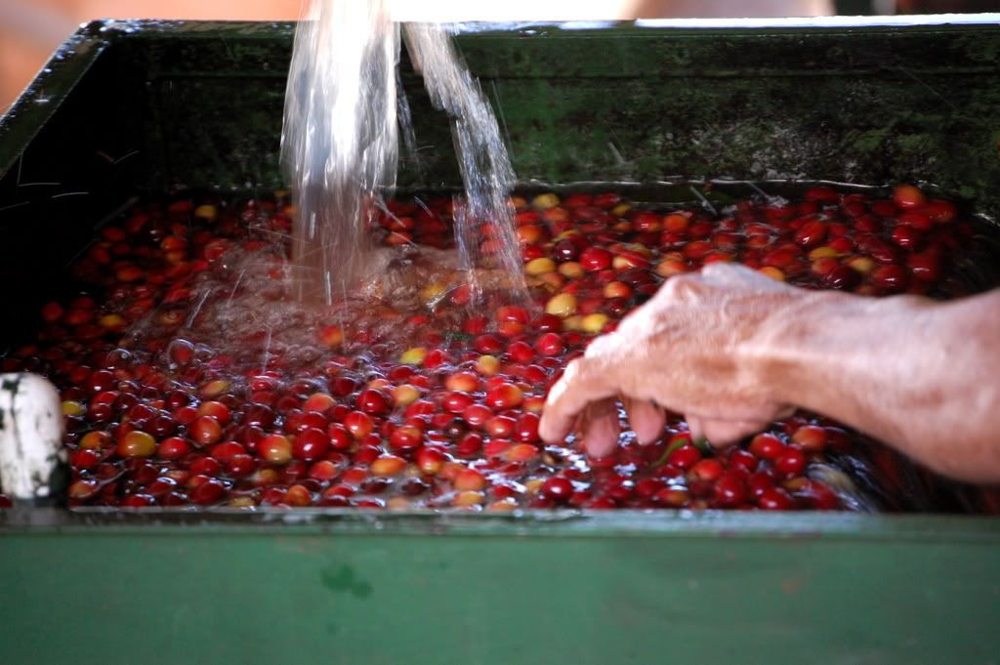
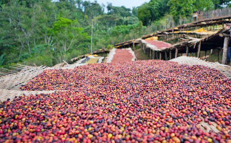
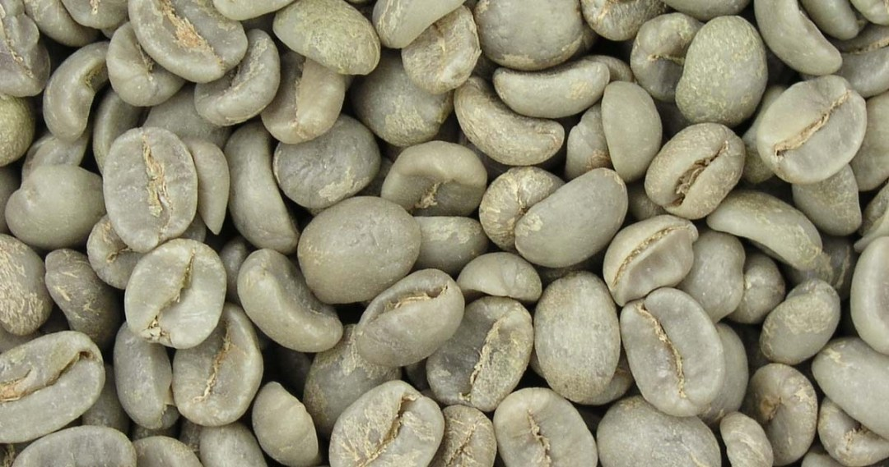

咖啡的加工
咖啡果實的加工主要分為日曬法(Dry Processing)和水洗法(WetProcessing)兩種，主要目的是取得帶 殻豆，或稱羊皮紙咖啡豆(ParchmentCoffee Bean)其中水洗法始於18世紀中期，花費成本較高，但成品口感較柔順細緻，因此價格也會高一點。
水洗處理法
- 
- 浮選：
會在蓄水槽中完成。成熟的果實比較重會沉在水底， 此時即可將浮在水面上的枝葉、垃圾、乾果、病果等去除。 有時還會以不同孔徑大小的特製篩子將咖啡果按照大小分開，以便調整下一步去皮機的間隙。 - 去皮：
利用去皮機將外果皮、果肉等去除，以利於接下來去除內果皮表面的果膠。 - 發酵：
是一個能影響咖啡豆風味與口感的重要環節，需要利用發酵槽完成，用以去除內果皮表面附著的果膠黏液。 具體又分為乾式發酵和濕式發酵兩種，但原理都是利用生物分解作用，使果膠從堅韌而難以剝離的質地轉為可溶解清洗。 - 洗豆：
為了使帶殼豆表面乾淨清潔、不黏手，這一道程序需要在發酵後迅速在洗豆池中進行。 有時在洗豆之後還需將洗滌後的帶殼豆置於清水中浸泡幾個小時。 - 乾燥：
完成洗豆和浸泡的帶殼豆含水量往往超過50%，因此需要透過此程序將表面烘乾， 並使水分含量降至11%~13%。乾燥咖啡豆最好的方法是利用太陽光進行日光乾燥，我們經常看到的擺滿咖啡豆的曬豆場或離地棚架就是在進行此項工作。 - 脫殼：
帶殼豆在販售前，還需要進行脱殼處理。先使用脱殼機去除殘留的內果皮(果膠)， 脱殼後的再用抛光機進行表面拋光處理，以去除雜物和銀皮。
日曬處理法
- 
- 曝曬：
將採收下來的新鮮果實攤在曬豆場或離地棚架上晾曬，約需1〜2週時間。 - 脱殼：
將含水量降至10%〜12%的咖啡果以脱殼機直接脱去果皮、果肉與羊皮層， 並挑去雜質，再使用電子選豆機等設備進行分級。
濕刨法
- 
- 去除浮豆：
採收後的咖啡櫻桃倒入水中，藉此挑選出發育不全的果實。 - 脱殼：
以機器將果皮、果肉、果膠去除，留下銀皮。 - 乾燥：
將生豆以日曬或機器進行乾燥，將含水量降低12%～13%。